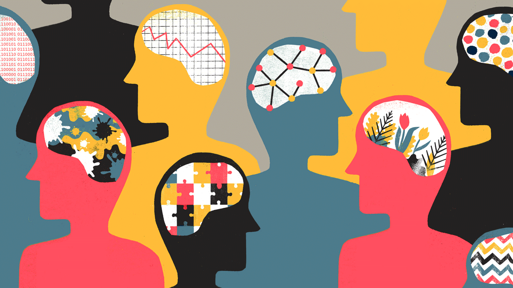

Mental Health
According to the website MentalHealth, Mental health includes our emotional, psychological, and social well-being. (What is Mental Health?, 2020) A person with good mental health is someone that can work well under pressure, chooses the right decisions, and connects with others. Mental health problems may appear through-out your lifetime. Different factors may affect the person that may cause these conditions. Many people suffer from mental health disorders, with almost 26 percent of all cause of deaths in the Philippines belonging to it. Self-harm is ranked as the 27th leading cause of death during 2020 from 31th from 2019
Mental Health Illnesses
There are numerous mental health conditions that we know as of today. Examples of these are: depression, schizophrenia, ADHD, and PTSD. Depression is considered a mood disorder. A person suffering from depression is noted as having little energy and has lost interest in doing things. Schizophrenia is known as a psychotic disorder. Symptoms of this disorder are hallucinations and having trouble with memories. ADHD is known as a behaviour disorder. ADHD means attention deficit hyperactivity disorder. A person with ADHD has trouble in focusing their attention. PTSD is a disorder that is formed in response to a traumatic event. PTSD means post traumatic stress disorder and is very common on war veterans, hence the old name of Shell-shock. There are more mental health disorders that people suffer from.